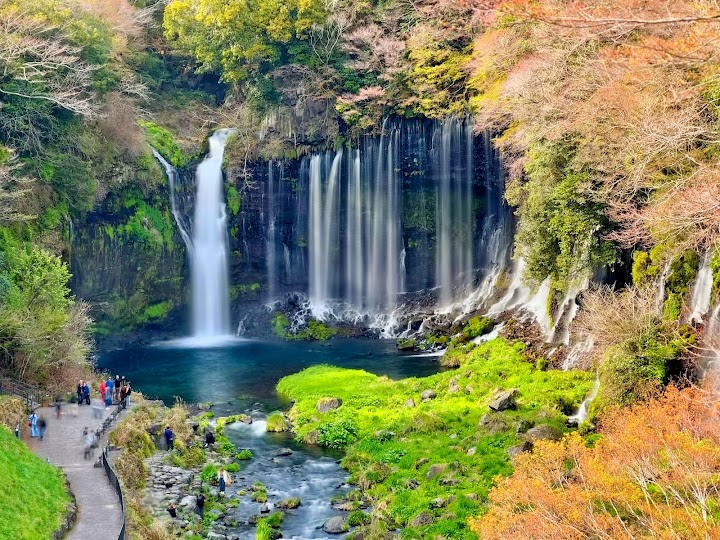
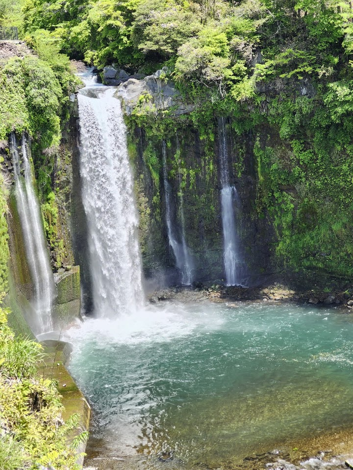
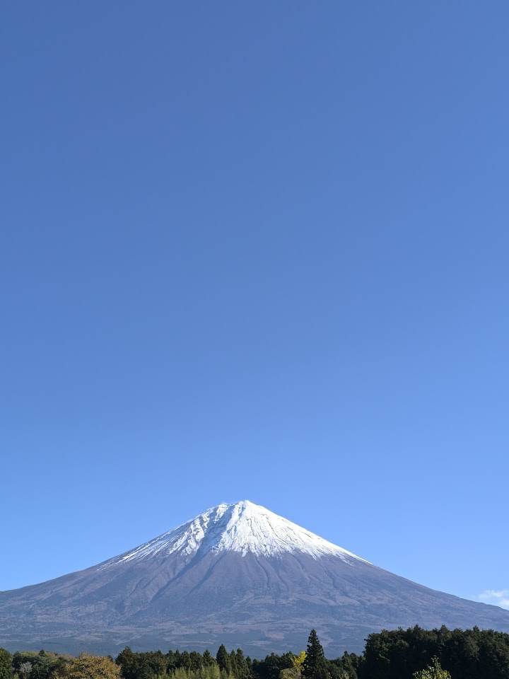
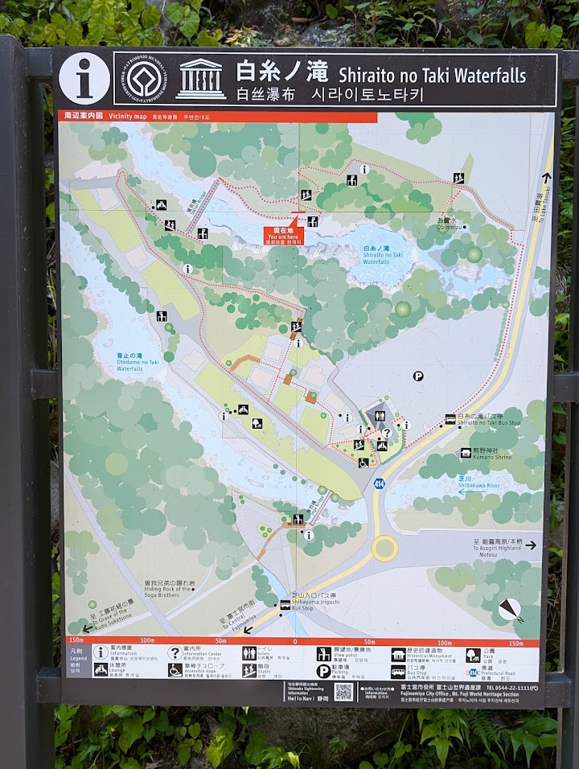
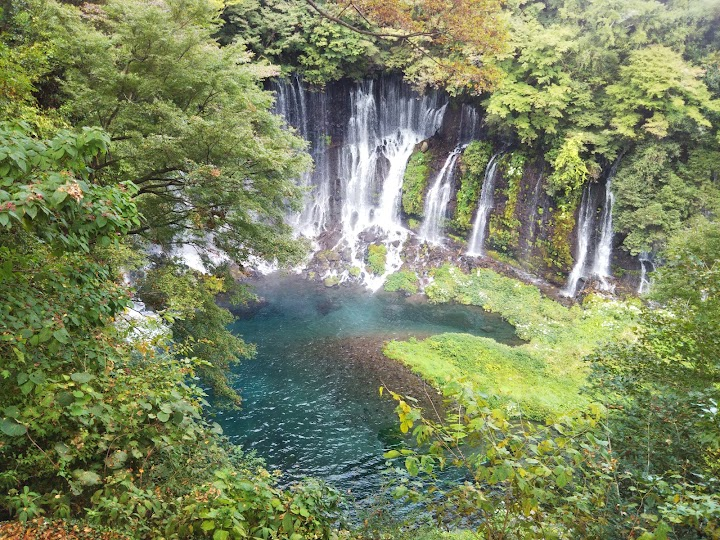

Shiraito Falls
Shiraito Falls is a unique, wide waterfall in the lush surroundings of Fuji-Hakone-Izu National Park, where many thin streams of spring water spill over a curved cliff. It is a peaceful spot near the foot of Mt Fuji.
Open in Google Maps (street view, more photos and reviews there)






Visitor tips on finding it and getting there
Located in the mountains of Itoshima, Shiraito Falls offers the most natural “air conditioning” to visitors. What a beautiful way to start my weekday getaway here escaping the city heat and enjoying nature! I would like to share with you my self-curated one-day tour (in the order of my visit) in Itoshima. I hope you will find it useful for your planning. 1️⃣ Shiraitono Falls 2️⃣ Forest Cafe Midori no Oto 3️⃣ Ichiran Ichiran no Mori Itoshima 4️⃣ Sakurai Futamigaura’s Couple Stones 5️⃣ Mataichi Salt Maker It is a 45-minute ride by car from central Fukuoka City/Hakata Station. The best way to
Such a pretty waterfall, stretching across a wide part of the valley. The walk down to the second waterfall is well worth it, and so is the walk up to the upper viewpoint – from where you can see Mt Fuji on a clear day and complete the full loop roundtrip back to the car park.
Majestical waterfalls with a Mt Fuji background. Free entry and Exceptional coffee at Mifujiya located near the top car park. Some stairs required to get close to the falls. But viewing is still accessible if you can't.